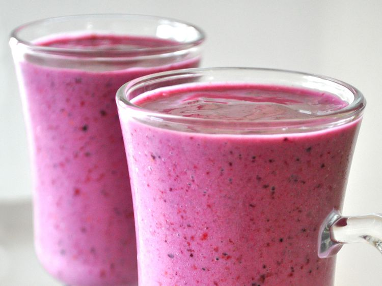

Fruit and Yogurt Smoothie

Description
This recipe brings together the power of fruit and yogurt to create the world's most delicious smoothie. Your tastebuds will thank you for giving them this tasty experience.
Beyond being a delicious treat, it is easy to make. With three steps, you too can have the most delicious smoothie in the world!
Ingredients
- 1 cup of strawberries
- 1 banana
- 1/2 cup of yogurt
- 1/4 cup of pineapple juice
- 1 1/2 teaspoons of white sugar
- 1 teaspoon of milk
Directions
- Add strawberries, banana, yogurt into the blender
- Add pineapple juice, sugar, and milk into blender
- Blend until the ingredients until smooth
Recipe Credit:
https://www.allrecipes.com/recipe/215189/fruit-and-yogurt-smoothie/